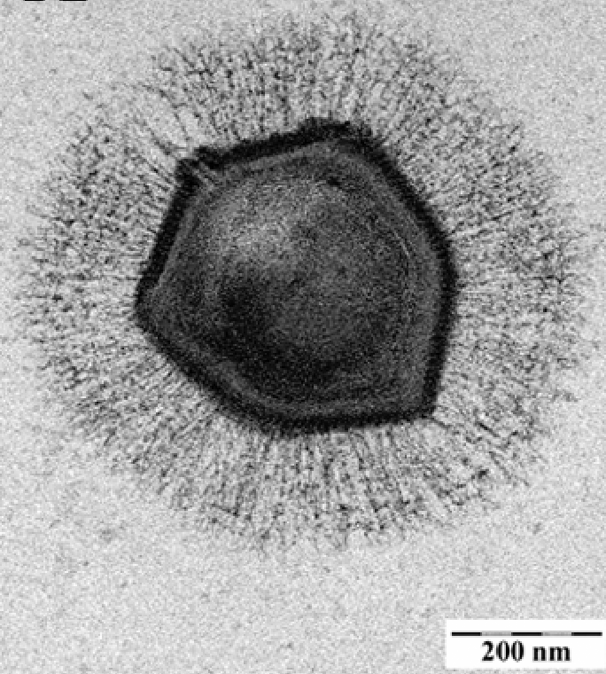

第 18 章
作为全书的收束章节
站在实验室的荧光灯下，看着培养皿中那些刚刚被巨型病毒裂解的变形虫残骸，你手里拿着的是一份刚刚打印出来的基因组比对图谱。这份图谱显示，某种巨型病毒拥有的基因数量，已经超过了某些寄生细

菌维持生命所需的最低基因数。而另一份数据则告诉你，就在一升普通的海水里，病毒颗粒的数量比银河系中的恒星还要多出一个数量级。
这两件事同时为真。它们之间隔着一条认知的鸿沟，而这条鸿沟的底部，埋藏着生命起源的秘密。
你已经在这本书里走过了很长的路。你见过病毒如何驱动海洋的碳泵，如何塑造哺乳动物的胎盘，如何改写人类文明的进程，如何模糊生命与非生命的边界。每一个机制，每一次相遇，都在把你推向同一个问题。
这个问题在第十七章的结尾已经被撬开了一道裂缝，现在，你需要沿着这道裂缝向下挖掘，一直挖到四十亿年前——挖到第一个细胞尚未出现、地球还是一片分子混沌汤的时代。关于病毒的起源，科学界有三条主要的探索路径。
它们被称为假说，但这个词可能会误导你——它们不是三个彼此排斥的备选答案，等待某个判决性实验来宣布其中一个是正确的。它们更像是三束从不同角度射入黑暗的光束，每一束照亮了问题的一个侧面，而三束光的交汇处，才是真相最可能藏身的地方。
第一条路径被称为退化假说，或者更正式地说，细胞缩减假说。它的思路最直观：病毒可能是远古寄生细胞的简化后代。想象一种早期的细胞——也许类似今天的支原体或立克次体——它选择了一条极端的寄生路线。它钻进别的细胞里，把越来越多维持独立生活的功能外包给宿主。它不再需要合成蛋白质的核糖体，因为可以从宿主那里偷；不再需要全套的代谢酶，因为宿主的细胞质里应有尽有。一代又一代，自然选择不断削减它的基因组。那些不能帮助它在寄生生活中更有效传播的基因被丢弃，最终剩下的，只是一套最小化的核酸复制指令和一个蛋白质外壳的编码。
这个过程在演化生物学中有一个更普遍的名称：退化演化。它不是病毒独有的现象。
你今天依然能看到活的例子——某些寄生蠕虫失去了消化系统，因为它们在宿主的肠道里直接吸收营养；某些深海鱼类失去了眼睛，因为在永恒的黑暗中视觉毫无用处。病毒，按照这个假说，只是把这种逻辑推到了极致。它们退化得如此彻底，以至于连细胞结构本身都被丢弃了。
这个假说有一个很吸引人的地方：它解释了为什么病毒没有核糖体。不是它们从来就没有，而是它们在演化过程中丢掉了。它也解释了为什么巨型病毒会携带那么多基因——它们可能处在这个退化过程的中途，还没有来得及把所有“多余”的功能都外包出去。
但它也面临一个棘手的困难。如果病毒是从细胞退化而来，那么最古老的病毒应该和最古老的细胞同时出现，或者更晚。然而，当你比较不同病毒之间的基因序列时，你发现了一些非常古老的特征——古老到可能早于所有现存细胞的共同祖先。某些病毒特有的蛋白质折叠模式，在任何细胞生物中都找不到对应物，这意味着它们可能来自一个比细胞更古老的分子世界。这就引出了第二条路径：逃逸假说。
这个假说把病毒想象成从细胞基因组中叛逃的分子片段。在你的每一个细胞核里，都有一些可以在染色体之间跳跃的DNA序列，它们被称为转座子或跳跃基因。这些序列能够将自己从基因组的一个位置剪切下来，插入到另一个位置。有些转座子在剪切时会携带额外的基因片段，有些甚至能诱导细胞为自己制造RNA拷贝，然后反转录成DNA插入新的位置。它们的行为，与某些病毒惊人地相似。
事实上，逆转录病毒——包括HIV——的复制周期，与一类叫做反转录转座子的基因组元件几乎完全一致。两者都需要先转录成RNA，再通过反转录酶变回DNA，然后整合到宿主的基因组中。区别只在于，逆转录病毒学会了给自己包裹一层蛋白质外壳，从而能够在细胞之间旅行，而转座子只能在一个基因组内部搬家。
按照逃逸假说，最早的病毒就是这样诞生的：某个特别“成功”的转座子偶然获得了编码外壳蛋白的基因，于是它突破了细胞的边界，变成了能够在个体之间传播的感染性颗粒。
不同的转座子独立逃逸了许多次，形成了今天我们看到的各种病毒家族。
这个假说优雅地解释了病毒与宿主基因组之间深刻的相似性。为什么病毒的基因有时会和宿主的基因如此相像？因为它们本来就来自宿主。为什么病毒能够如此精确地劫持细胞的分子机器？因为它们是在这套机器内部演化出来的，对每一个开关和杠杆都了如指掌。
但逃逸假说也有它的盲区。它很难解释那些在细胞生物中完全没有对应物的病毒基因。巨型病毒携带的大量独特基因——那些在细菌、古菌和真核生物中都找不到同源序列的基因——是从哪里来的？如果病毒只是叛逃的细胞片段，它们不应该拥有一个完全独立于细胞的基因库。
而且，还有一个更根本的问题。转座子本身是从哪里来的？它们是细胞基因组的原生居民，还是更古老的东西的残余？当你沿着这个问题追溯下去，你发现转座子可能并不是细胞的发明，而是某种更早的分子寄生关系的遗迹。于是你来到了第三条路径，也是最大胆的一条：病毒先于细胞假说。
这个假说提出，在第一个细胞出现之前，地球上就已经存在类似病毒的自我复制实体。
在那个被地质学家称为冥古宙的时代——距今四十五亿到四十亿年前——地球表面是一片熔岩的海洋，大气中充斥着甲烷和氨，陨石撞击的频率足以让任何复杂分子结构瞬间解体。但在某些相对庇护的环境中——也许是深海热泉口的矿物腔室，也许是潮汐拍打的黏土滩涂——第一批能够自我复制的RNA分子开始出现。这就是所谓的“RNA世界”假说，它已经是生命起源研究的主流框架。
RNA是一种神奇的分子：它可以像DNA一样携带遗传信息，又可以像蛋白质一样催化化学反应。在今天的细胞中，核糖体——那个将遗传信息翻译成蛋白质的分子机器——的核心催化部件就是由RNA构成的，蛋白质只是后来的辅助。这意味着，在DNA和蛋白质接管世界之前，RNA可能曾经独自支撑过一个原始的分子生态系统。
在那个世界里，RNA分子通过碱基配对复制自己。有些RNA演化出了切割其他RNA的能力，从而获取复制所需的原料。
有些RNA演化出了抵抗切割的结构。有些RNA学会了将多个短片段连接成长链。竞争、合作、寄生——所有这些我们今天在生态系统中看到的动态，在那个分子汤池中就已经开始运转了。
病毒先于细胞假说认为，今天病毒的核心复制策略——进入一个区室，利用其中的资源大量复制自己，然后释放后代去感染新的区室——正是那个原始分子生态系统的直接遗产。最早的“病毒”可能只是一些特别擅长自我复制的RNA分子，它们寄生在更复杂的RNA集合体上。当这些集合体最终演化出了脂质膜，将自己包裹成第一个原始细胞时，“病毒”已经在那里了——它们从一开始就是生命生态系统的一部分，不是后来闯入的破坏者。
这个假说可以解释为什么病毒拥有那么多独一无二的基因。它们不是从细胞那里偷来的，而是从那个前细胞时代的分子多样性中继承下来的。细胞生命只是从那个更广阔的基因池中选取了一部分，而病毒保留了另一部分。
今天，当你在巨型病毒的基因组中发现那些与细胞完全不同的代谢基因时，你看到的可能不是退化或叛逃的痕迹，而是另一个演化谱系的活化石——一个从未成为细胞的平行生命形式。
它也可以解释一个长期困扰分子生物学家的谜题：为什么细胞中的DNA复制机制如此复杂，而且不同生命域——细菌、古菌和真核生物——之间的复制酶差异如此之大？如果所有细胞都来自同一个共同祖先，它们应该共享同一套DNA复制工具。但事实并非如此。
有一种解释正在获得越来越多的支持：现代细胞中的DNA复制酶可能来自病毒。这听起来像是一个疯狂的倒置。我们习惯性地认为病毒是偷窃者——它们从细胞那里偷走了复制所需的酶。但如果病毒先于细胞存在，那么逻辑就要反过来：是细胞从病毒那里借用了复制工具。
证据来自对DNA聚合酶结构的详细比较。当你把不同生物的DNA聚合酶的氨基酸序列输入计算机，让算法重建它们的演化树时，你得到的结果不是一棵以细胞为根、病毒为枝的树。
相反，某些病毒——尤其是那些感染古菌和细菌的大型DNA病毒——的聚合酶位于树的根部附近，而细胞的聚合酶则分散在各个分枝上。这意味着，细胞可能在不同的演化阶段，从不同的病毒那里独立获取了DNA复制能力。
如果这是真的，那么病毒在生命史上扮演的角色就比我们想象的要根本得多。它们不仅仅是基因的搬运工——在细胞之间水平转移基因——它们可能是基因的发明者。
在那个RNA世界的末期，当某些分子开始尝试用更稳定的DNA来储存遗传信息时，病毒可能是这项技术的最早开发者。它们需要DNA，因为RNA太容易被宿主或竞争对手的核糖核酸酶降解。DNA的化学稳定性——那个额外的羟基缺失——使得病毒的遗传信息能够在恶劣的细胞外环境中存活更久。细胞后来也采用了DNA，可能是因为那些成功整合了病毒复制系统的细胞获得了巨大的适应性优势。
DNA的稳定性意味着更大的基因组，更大的基因组意味着更复杂的代谢网络，更复杂的代谢网络最终演化出了多细胞生物、神经系统、意识——以及此刻正在思考这些问题的你。
你在自己的基因组中携带着这场远古交易的证据。人类基因组的百分之八由内源性逆转录病毒的残骸组成——这个数字你现在已经知道了。但你需要更仔细地看一看这些残骸中的某一个，才能真正理解这场交易的具体内容。
HERV-W是一个内源性逆转录病毒家族的名称。它的某个成员在两千五百万到四千万年前感染了我们的灵长类祖先的生殖细胞，并永久地整合进了基因组。今天，这个古老的病毒序列中的一个基因——名为合胞素-1——被人类的胎盘用来构建合胞滋养层，那是一层将胎儿的血管与母体的血液供应分隔开来的细胞屏障。如果没有这层屏障，胎儿的组织会直接暴露在母体的免疫系统面前，妊娠将无法维持。换句话说，一个远古病毒的基因，被哺乳动物的演化重新编程，变成了胎盘发育不可或缺的组件。
你之所以能够出生，之所以能够以这种方式——通过母亲子宫内的漫长孕育——来到这个世界，部分原因是一个在数千万年前感染了你祖先的逆转录病毒。
这不是一个孤立的案例。在绵羊、小鼠、猫、狗和其他许多哺乳动物中，合胞素基因也来自不同的内源性逆转录病毒，每一次都是独立的整合事件，每一次都被演化选中并保留下来。胎盘不是一次演化出来的，而是多次——每一次，哺乳动物都向病毒借用了同一类工具。
当你从这个角度回望全书，你会发现一个模式正在浮现。病毒在海洋中裂解细菌，驱动碳泵，塑造全球气候——它们是地球生物化学循环的引擎。病毒在基因组之间搬运基因，加速演化，创造新物种——它们是遗传创新的引擎。病毒整合进宿主基因组，被驯化，被重新编程，变成胎盘、变成免疫系统的一部分、变成神经可塑性的调控元件——它们是复杂生命形式得以出现的引擎。这不是三个独立的故事。它们是同一台引擎在不同尺度上的运转——从分子到生态系统，从毫秒到地质年代。
而你现在看到的，是这台引擎最根本的层面：它可能从一开始就在那里。生命之树不是在一片无菌的空地上长出来的。它扎根的土壤里已经充满了病毒——或者说，充满了类似病毒的自我复制实体。这些实体为最早的细胞提供了基因、提供了复制工具、提供了演化的压力和创新。细胞生命不是在对抗病毒的过程中演化出来的，它是与病毒一起演化出来的，是在病毒的包围中、借助病毒的贡献演化出来的。
这不是一个关于敌对的故事。这是一个关于共生的故事——共生这个词在这里不是指和谐的共存，而是指不可分割的命运纠缠。病毒裂解细菌，每天杀死海洋中大约百分之二十的生物量。这听起来像是一场屠杀，但正是这场屠杀维持了微生物群落的多样性，防止任何一个物种独霸资源，从而保证了海洋生态系统的稳定。
死亡驱动着循环，循环驱动着生命。同样的逻辑在你的基因组中运转。那些内源性逆转录病毒的序列，大多数是沉默的——被表观遗传标记压制，被突变破坏，变成了无害的化石。但它们的存在本身就在塑造你的基因组结构。
它们提供了同源重组的位点，导致染色体片段的重复、缺失和重排。这些结构变异有时会导致疾病，但有时也会创造新的基因组合，为自然选择提供原料。你的基因组不是一座宁静的图书馆，而是一个永远在施工的建筑工地，而病毒序列就是那些不断被拆掉、改造、重新利用的脚手架。
现在，站在这一章的结尾，站在全书的收束点上，你需要做一个选择。你可以继续用旧的框架来看待病毒——把它们当作病原体，当作需要消灭的敌人，当作生命秩序中的异常和威胁。这个框架不是错的，但它是不完整的。它只看到了病毒与生命之树碰撞的瞬间，却没有看到碰撞之前和之后那漫长的共同历史。
或者，你可以接受一个更宏大的框架：病毒是生命的引擎。它们不是后来闯入的破坏者，而是从一开始就参与构建的工程师。它们驱动着这颗行星的生物化学循环，驱动着基因在物种之间的流动，驱动着基因组本身的创新和复杂化。你每呼吸一口空气，其中氧气的相当一部分来自海洋浮游植物的光合作用，而浮游植物的种群结构由病毒调控。
你每思考一个问题，你大脑中神经连接的塑性部分依赖于某个远古逆转录病毒留下的调控序列。你每存在一天，你体内那些沉默的病毒化石就在细胞分裂中被忠实地复制，连同你自己的基因一起，传递给下一代。
这台引擎从未停转。它在每一滴海水里运转，在每一寸土壤里运转，在你每一个细胞的细胞核里运转。它已经运转了至少四十亿年，而你的存在——你此刻的呼吸、思考、阅读——是它运转过程中产生的一个瞬间的、珍贵的、具有自我意识的结果。你不是这台引擎的旁观者。你是它的产物，也是它的参与者。你基因组中的那百分之八不是入侵者的残骸，而是四十亿年协同演化的契约书——一份写在你每一个细胞里的、用ATCG四个字母写成的、跨越地质年代的文件。
它记录了你的祖先与病毒之间所有的战争、所有的和解、所有的借用和改造。它不是一份耻辱的标记，而是一份谱系证书，证明你属于这颗行星上最古老、最庞大的生命网络。理解这一点，不是要征服病毒，而是要认清你在生命图景中的位置。
病毒不需要你的理解就可以继续运转。海洋碳泵不需要你的认可就可以继续调节气候。内源性逆转录病毒不需要你的感谢就可以继续塑造哺乳动物的胎盘。这台引擎是自主的，它按照自己的逻辑运转了四十亿年，并且将继续运转下去。
但作为人类，作为这个星球上唯一能够理解这些机制的物种，你有能力做出一个选择：是继续用恐惧和敌意来回应，还是用理解和谦卑来回应。这个选择不会改变病毒的运转，但它会改变你与这颗行星上生命网络的关系。
在第一章，你站在海边，捧起一捧海水。那捧海水里有三百亿个病毒颗粒，比银河系中的恒星还多。那时你第一次意识到，你看不见的世界比你看见的世界庞大得多。现在，在最后一章，你回到了同一片海滩。
但你手里不再捧着海水。你低头看着自己的手，看着皮肤下面隐约可见的静脉。你知道在那血管里流动的每一个细胞中，在那每一个细胞的细胞核里，都沉睡着远古的病毒。它们不是你的敌人。它们是你的历史，是你的构成，是你之所以能够存在的原因之一。
潮水涨上来了，淹没了你的脚踝。那潮水里同样充满了病毒——每一滴都在裂解细菌，释放碳，驱动循环，维持着这颗行星的生命支持系统。你站在两个尺度的交汇处：你的身体内部，病毒化石记录着四十亿年的历史；你的身体外部，病毒正在一秒不停地塑造着地球的现在和未来。这就是看不见的引擎。它从未离开过你，你也从未离开过它。